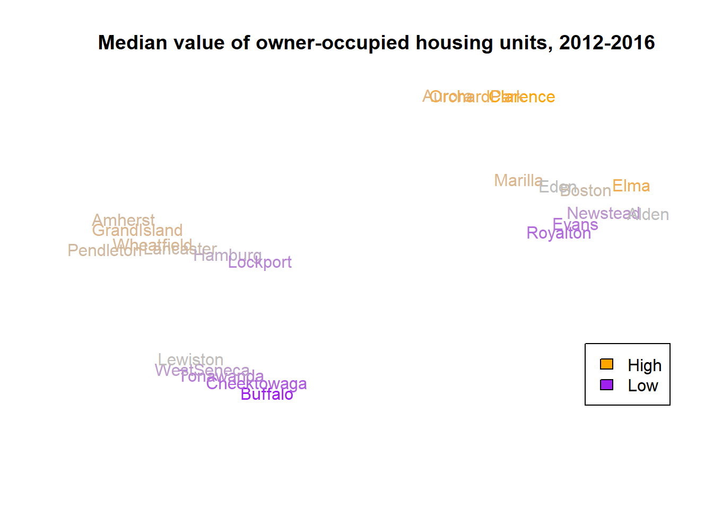
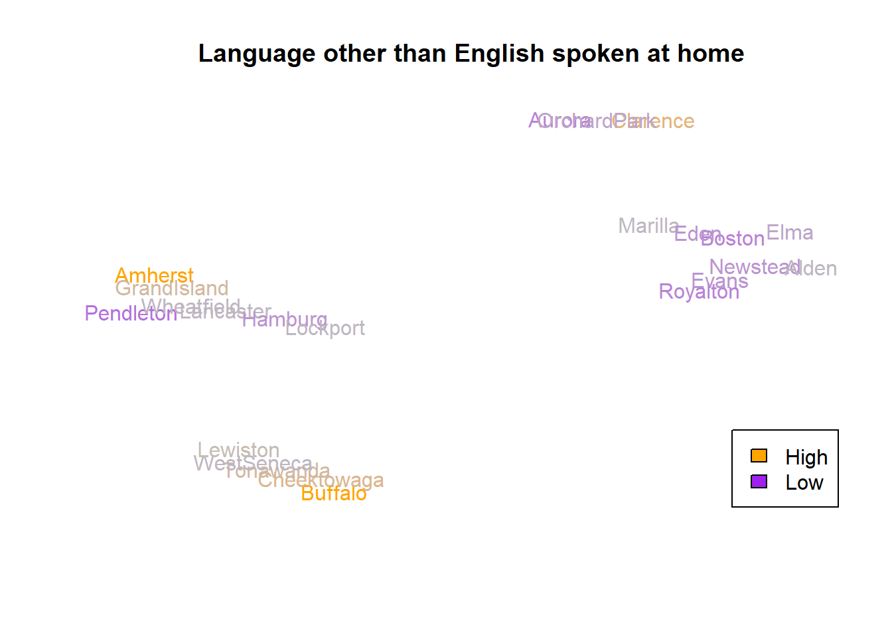
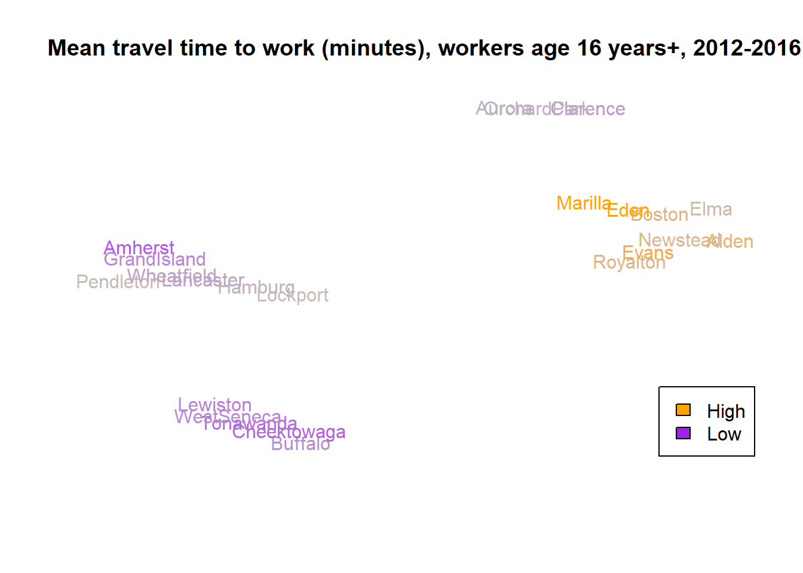
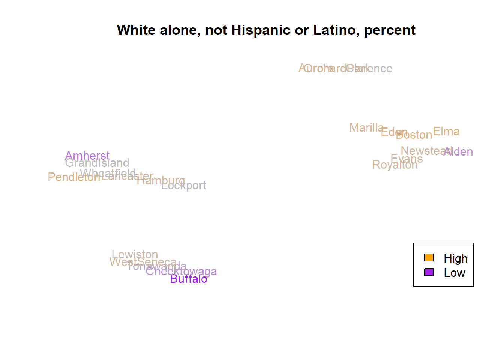

Based on some conversations about market, it may be useful to examine the trends at a township level across Erie county. I pulled this data from US Census QuickFacts. It has the following variables.
## [,1]
## [1,] "Persons under 18 years, percent"
## [2,] "White alone, not Hispanic or Latino, percent"
## [3,] "Median value of owner-occupied housing units, 2012-2016"
## [4,] "Households, 2012-2016"
## [5,] "Bachelor's degree or higher, percent of persons age 25 years+, 2012-2016"
## [6,] "Median household income (in 2016 dollars), 2012-2016"
## [7,] "Persons in poverty, percent"
## [8,] "Language other than English spoken at home, percent of persons age 5 years+, 2012-2016"
## [9,] "Mean travel time to work (minutes), workers age 16 years+, 2012-2016"Roughly the clusters are:
## $`1`
## [1] "Buffalo" "Cheektowaga" "Tonawanda" "WestSeneca" "Lewiston"
##
## $`2`
## [1] "Newstead" "Elma" "Marilla" "Alden" "Boston" "Evans" "Eden" "Royalton"
##
## $`4`
## [1] "Lancaster" "Amherst" "Hamburg" "Lockport" "Pendleton" "Wheatfield" "GrandIsland"
##
## $`5`
## [1] "Clarence" "Aurora" "OrchardPark"and their relative compositions are
## 1 2 4 5
## Persons under 18 years, percent 0.19 0.190 0.21 0.22
## White alone, not Hispanic or Latino, percent 0.88 0.960 0.91 0.95
## Median value of owner-occupied housing units, 2012-2016 119800.00 161700.000 179400.00 223700.00
## Households, 2012-2016 32801.00 3320.000 8135.00 11487.00
## Bachelor's degree or higher, percent of persons age 25 years+, 2012-2016 0.28 0.265 0.32 0.47
## Median household income (in 2016 dollars), 2012-2016 55081.00 63014.000 71105.00 88467.00
## Persons in poverty, percent 0.08 0.045 0.08 0.04
## Language other than English spoken at home 0.07 0.030 0.05 0.04
## Mean travel time to work (minutes), workers age 16 years+, 2012-2016 20.50 25.650 21.80 22.50t-SNE Plots reflect multivariate distance. I’ve colored them here by specific factors. Note that this distance omits the use of number of households.

That Alden number probably includes the prison population (best guess, households x avg/household - actual population leaves about 1800 unaccounted for: Wende and ECHF make up maybe 1600 max).
There’s a variable about foreign born persons I could add.
Not for Distribution. 2018.